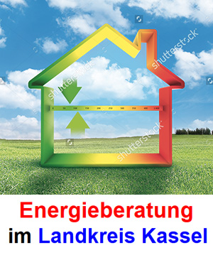
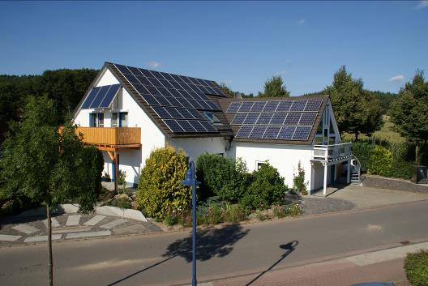
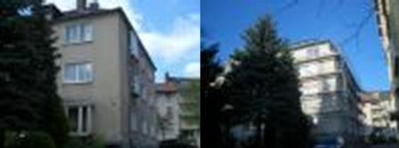
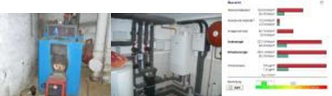
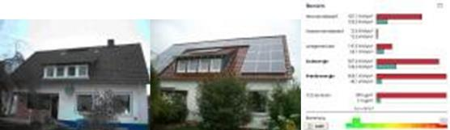
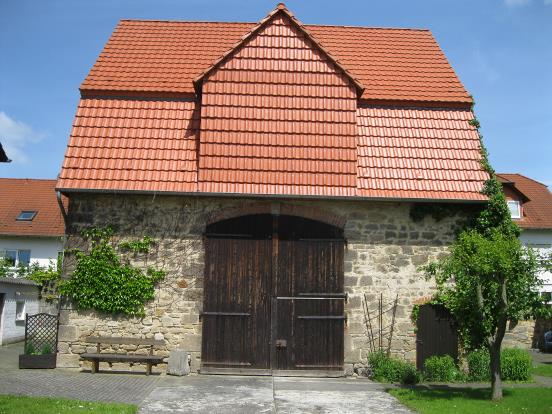
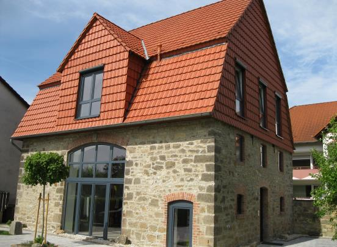

Energieausweis
Individuell auf Gebäude, Ausgangslage und Zielsetzung abgestimmt.

Kontakt aufnehmenEnergieberatung
Bauplanungs- & Sachverständigenbüro - Dipl.-Ing. Harald Hahn begleitet Sie mit fundierter Energieberatung – persönlich, nachvollziehbar und auf Ihr Vorhaben abgestimmt.

Profil
Fachliche Tiefe, persönliche Verantwortung und ein klarer Blick auf das, was für Ihr Vorhaben wirklich relevant ist.
Leistungsspektrum
12 klar strukturierte Leistungsbereiche.
Individuell auf Gebäude, Ausgangslage und Zielsetzung abgestimmt.
Individuell auf Gebäude, Ausgangslage und Zielsetzung abgestimmt.
Individuell auf Gebäude, Ausgangslage und Zielsetzung abgestimmt.
Individuell auf Gebäude, Ausgangslage und Zielsetzung abgestimmt.
Individuell auf Gebäude, Ausgangslage und Zielsetzung abgestimmt.
Individuell auf Gebäude, Ausgangslage und Zielsetzung abgestimmt.
Individuell auf Gebäude, Ausgangslage und Zielsetzung abgestimmt.
Individuell auf Gebäude, Ausgangslage und Zielsetzung abgestimmt.
Individuell auf Gebäude, Ausgangslage und Zielsetzung abgestimmt.
Individuell auf Gebäude, Ausgangslage und Zielsetzung abgestimmt.
Individuell auf Gebäude, Ausgangslage und Zielsetzung abgestimmt.
Individuell auf Gebäude, Ausgangslage und Zielsetzung abgestimmt.
Ausgewählte Einblicke





Vertrauen
So läuft Ihr Projekt
Wir erfassen Ziele, Gebäude und vorhandene Unterlagen.
Wir prüfen Optionen, Prioritäten und sinnvolle nächste Schritte.
Sie erhalten eine klare, nachvollziehbare Grundlage für Entscheidungen.
Kompetenz mit Gesicht
Persönlich verantwortlich
Energieberatung
Nächster Schritt